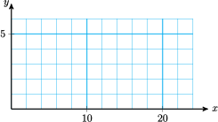
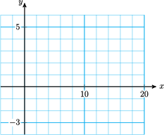
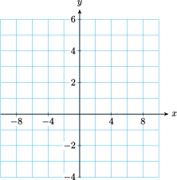

Section 6.5 Radical Equations
Subsection Solving a Radical Equation
A radical equation is one in which the variable appears under a square root or other radical. We solve simple radical equations by raising both sides to the appropriate power. For example, to solve the equation
we square both sides to find
You can check that \(x=13\) is the solution for this equation.
Example 6.97.
Solve \(~4\sqrt[3]{x-9} = 12\)
We first divide both sides of the equation by 4 to isolate the radical.
Next, we cube both sides of the equation.
The solution is 36. We can also solve the equation graphically by graphing \(y=4\sqrt[3]{x-9}\text{,}\) as shown in the figure. The point \((36,12)\) lies on the graph, so \(x=36\) is the solution of the equation \(~4\sqrt[3]{x-9} = 12\text{.}\)
Notebook 6.98. Practice 1.
Subsection Extraneous Solutions
Whenever we raise both sides of an equation to an even power, it is possible to introduce false or extraneous solutions. For example, the equation
has no solution, because \(\sqrt{x}\) is never a negative number. However, if we try to solve the equation by squaring both sides, we find
You can check that \(25\) is not a solution to the original equation, \(\sqrt{x}=-5 \text{,}\) because \(\sqrt{25} \) does not equal \(-5\text{.}\)
Raising both sides of an equation to an odd power does not introduce extraneous solutions. However, if we raise both sides to an even power, we should check each solution in the original equation.
Notebook 6.99. QuickCheck 1.
Example 6.100.
Solve the equation \(~\sqrt{x+2}+4 = x\)
First, we isolate the radical expression on one side of the equation. (This will make it easier to square both sides.)
Check
Does \(\sqrt{\alert{2}+2}+4=\alert{2} \text{?}\)
\(\hphantom{blank}\glert{{\text{No; }2\text{ is not a solution.}}} \)
Does \(\sqrt{\alert{7}+2}+4=\alert{7} \text{?}\)
\(\hphantom{blank}\glert{{\text{Yes; }7\text{ is a solution.}}} \)
The apparent solution \(2\) is extraneous. The only solution to the original equation is \(7\text{.}\) We can verify the solution by graphing the equations
as shown at right. The graphs intersect in only one point, \((7, 3)\text{,}\) so there is only one solution, \(x=7\text{.}\)
Caution 6.101.
When we square both sides of an equation, it is not correct to square each term of the equation separately. Thus, in Example 6.100, the original equation is not equivalent to
This is because \((a + b)^2 \ne a^2 + b^2\text{.}\) Instead, we must square the entire left side of the equation as a binomial, like this,
or we may proceed as shown in Example 6.100.
Notebook 6.102. Practice 2.
Notebook 6.103. QuickCheck 2.
Subsection Solving Formulas
We can also solve formulas involving radicals for one variable in terms of the others.
Example 6.104.
Solve the formula \(~t=\sqrt{1+s^2}~\) for \(s\text{.}\)
Because the variable we want is under a square root, we square both sides of the equation, to get
Notebook 6.105. Practice 3.
Subsection Equations with More than One Radical
Sometimes we need to square both sides of an equation more than once in order to eliminate all the radicals.
Example 6.106.
Solve \(~\sqrt{x-7}+\sqrt{x}=7 \text{.}\)
First, we isolate the more complicated radical on one side of the equation. (This will make it easier to square both sides.) We subtract \(\sqrt{x} \) from both sides to get
Now we square each side to remove one radical. Be careful when squaring the binomial \(7-\sqrt{x} \text{.}\)
We collect like terms, and isolate the radical on one side of the equation.
Finally, we square both sides again to obtain
Check
Does \(\sqrt{\alert{16}-7}+\sqrt{\alert{16}}=7\text{?}\)
\(\hphantom{blank}\glert{\text{Yes. The solution is } 16.}\)
Caution 6.107.
Recall that we cannot solve a radical equation by squaring each term separately. So it is incorrect to begin Example 106 by writing
We must square the entire expression on each side of the equal sign as one piece.
Notebook 6.108. Practice 4.
Subsection Simplifying \(\sqrt[n]{a^n}\)
We have seen that raising to a power is the inverse operation for extracting roots, so that
For example,
What if the power and root operations occur in the opposite order? Is it always true that \(~\sqrt[n]{a^n} = a~\text{?}\)
First, consider the case where the index is an odd number. For example,
Because every real number has exactly one \(n\)th root if \(n\) is odd, we see that,
However, if \(n\) is even, then \(a^n\) is positive, regardless of whether \(a\) itself is positive or negative, and hence \(\sqrt[n]{a^n}\) is positive also. For example, if \(a=-3\text{,}\) then
In this case, \(\sqrt{a^2}\) does not equal \(a\text{,}\) because \(a\) is negative but \(\sqrt{a^2}\) is positive. We must be careful when taking even roots of powers. We have the following special relationship for even roots.
We summarize our results in the box below.
Roots of Powers.
In particular, note that it is not always true that \(\sqrt{a^2} = a\text{,}\) unless we know that \(a \ge 0\text{.}\) Otherwise, we can only assume that \(\sqrt{a^2} = \abs{a}\text{.}\)
Example 6.109.
- \(\displaystyle \sqrt{16x^2} = 4\abs{x}\)
- \(\displaystyle \sqrt{(x-1)^2} = \abs{x-1}\)
Notebook 6.110. Practice 5.
Notebook 6.111. QuickCheck 3.
Exercises Problem Set 6.5
Warm Up
1.
Solve the equation. Isolate the radical first, then square both sides of the equation.
- \(\displaystyle -3\sqrt{z} + 14 = 8\)
- \(\displaystyle 8-3\sqrt{9+2w} = -7\)
2.
Square the binomial.
- \(\displaystyle (3x+4)^2\)
- \(\displaystyle (2\sqrt{x}-3)^2\)
- \(\displaystyle (4-\sqrt{x+3})^2\)
- \(\displaystyle (5-2\sqrt{2x-5})^2\)
3.
-
Complete the table of values and graph \(y=\sqrt{x-4}\text{.}\)
\(x\) \(y\) \(4\) \(\hphantom{0000}\) \(5\) \(\hphantom{0000}\) \(6\) \(\hphantom{0000}\) \(10\) \(\hphantom{0000}\) \(16\) \(\hphantom{0000}\) \(19\) \(\hphantom{0000}\) \(24\) \(\hphantom{0000}\)  - Solve \(~\sqrt{x-4}=3~\) graphically and algebraically. Do your answers agree?
4.
-
Complete the table of values and graph \(y=4-\sqrt{x+3}\text{.}\)
\(x\) \(y\) \(-3\) \(\hphantom{0000}\) \(-2\) \(\hphantom{0000}\) \(0\) \(\hphantom{0000}\) \(1\) \(\hphantom{0000}\) \(4\) \(\hphantom{0000}\) \(8\) \(\hphantom{0000}\) \(16\) \(\hphantom{0000}\)  - Solve \(~4-\sqrt{x+3}=1~\) graphically and algebraically. Do your answers agree?
5.
-
Complete the table of values and graph \(y=4-\sqrt[3]{x}\text{.}\)
\(x\) \(y\) \(-25\) \(\hphantom{0000}\) \(-20\) \(\hphantom{0000}\) \(-15\) \(\hphantom{0000}\) \(-10\) \(\hphantom{0000}\) \(-5\) \(\hphantom{0000}\) \(0\) \(\hphantom{0000}\) \(5\) \(\hphantom{0000}\) \(10\) \(\hphantom{0000}\) \(15\) \(\hphantom{0000}\) \(20\) \(\hphantom{0000}\) 
- Solve \(~4-\sqrt[3]{x}=6~\) graphically and algebraically. Do your answers agree?
6.
-
Complete the table of values and graph \(y=3+\sqrt[3]{x-3}\text{.}\)
\(x\) \(y\) \(-8\) \(\hphantom{0000}\) \(-6\) \(\hphantom{0000}\) \(-4\) \(\hphantom{0000}\) \(-2\) \(\hphantom{0000}\) \(0\) \(\hphantom{0000}\) \(2\) \(\hphantom{0000}\) \(4\) \(\hphantom{0000}\) \(6\) \(\hphantom{0000}\) \(8\) \(\hphantom{0000}\)  - Solve \(~3+\sqrt[3]{x-3}=1~\) graphically and algebraically. Do your answers agree?
Skills Practice
For Problems 7–16, solve.
7.
\(3z+4=\sqrt{3z+10}\)
8.
\(2x+1=\sqrt{10x+5}\)
9.
\(\sqrt{2y-1}=\sqrt{3y-6}\)
10.
\(\sqrt{x-3}\sqrt{x}=2\)
11.
\(\sqrt{y+4}=\sqrt{y+20}-2\)
12.
\(\sqrt{x}+\sqrt{2}=\sqrt{x+2}\)
13.
\(\sqrt[3]{2x-5} -1 = 2\)
14.
\(16 = 12 - \sqrt[3]{x+24}\)
15.
\(15-2\sqrt[3]{x-4} = 9\)
16.
\(2 = 8-3\sqrt[3]{x^3+1}\)
For Problems 17 and 18, use absolute value bars as necessary to simplify the radicals.
17.
- \(\displaystyle \sqrt{4x^2}\)
- \(\displaystyle \sqrt{(x-5)^2}\)
- \(\displaystyle \sqrt{x^2-6x+9}\)
18.
- \(\displaystyle \sqrt{9x^2y^4}\)
- \(\displaystyle \sqrt{(2x-1)^2}\)
- \(\displaystyle \sqrt{9x^2-6x+1}\)
Applications
19.
If you are flying in an airplane at an altitude of \(h\) miles, on a clear day you can see a distance of \(h\) miles to the horizon, where
- At what altitude will you be able to see for a distance of 100 miles? How high is that in feet?
- Solve the formula for \(h\) in terms of \(d\text{.}\)
20.
If a gun is fired vertically into the air, the time it takes the bullet to return to the ground is given approximately by
where \(h\) is the greatest height the bullet reaches in meters, and \(g\) is the force of gravity, 9.8 meters per second squared.
- If the bullet returns to earth in 12 seconds, what was the greatest height it reached?
- Solve the formula for \(h\) in terms of \(g\) and \(t\text{.}\)
21.
The height of a cylindrical storage tank is four times its radius. If the tank holds \(V\) cubic inches of liquid, its radius in inches is
- What is the volume of a tank whose radius is 3 inches?
- Solve the formula for \(V\) in terms of \(r\text{.}\)
22.
In order for a windmill to generate \(P\) watts of power, the velocity of the wind, in miles per hour, must be
- How much power will a wind speed of 30 mph generate?
- Solve the formula for \(P\) in terms of \(v\text{.}\)
For Problems 23–26, solve the formula for the indicated variable.
23.
\(c=\sqrt{a^2-b^2},~\) for \(b\)
24.
\(x=a-\sqrt{h(2r-h)},~\) for \(r\)
25.
\(D=S\sqrt[3]{1-\dfrac{v}{W}},~\) for \(W\)
26.
\(R=\dfrac{T}{1-\sqrt[3]{1-K}},~\) for \(K\)